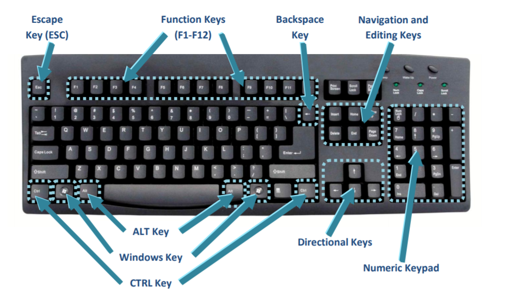

Phone Tricks

Scratch for Arduino
Window Updates

AI

Computer Shortcuts

I'm an unknown programmer who is capable of web hosting and website designing. I also do graphic designing and photography. Everything is possible; it's just a matter of your ideas and what you think. I'm also knowledgeable about phone tricks and tips, Arduino, AI, computer repairs, and shortcuts. I can also teach Scratch for Arduino to beginners and intermediate learners, and provide assistance with updating Windows to the latest version and more.